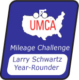
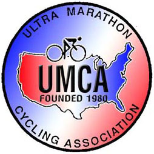

Year-Rounder Century Challenge
Larry Schwartz Year-Rounder Century Challenge
Club centuries are the highlight of many endurance riders' seasons: the fun of a day on the bike with friends and the challenge of riding 100 miles. And, at least for the day, an unrestricted diet!
The Year Rounder is for century riders looking for a new challenge: consistent performance throughout the year! Can you ride a century (or longer) every month of the year? You can maintain your fitness and have more fun cycling.
The Year-Rounder is a division of the UMCA Mileage Challenge. All you need to do is sign up for the Mileage Challenge, and submit your centuries - we'll do the rest. Centuries can be either Organized centuries or Personal rides that you design yourself (explained below).
Mileage Challenge participants receive:
- an e-book Century Tips on training, nutrition, equipment and technique;
- an e-newsletter, sharing tips and stats;
- a bi-monthly Year Rounder column by Crista Borras and Chuck Wood, who ride centuries every weekend;
- a section at www.ultracycling.com devoted to the best century stories sent in by riders;
- a rider with at least 1,000 miles in the Mileage Challenge gets a discount on Accelerade and EnduroxR4.
If you reach the goal, we'll award you a Year-Rounder medal. Although the goal is a century a month, it might be too snowy or icy some months; so we'll allow two make-up rides. For example, if you get snowed out in January, just do two centuries in February.
For routing reasons some centuries are just under 100 miles. In the Mileage Challenge a Century is a ride of 90 - 149 miles.
You don't have to ride alone - UMCA members lead HUB rides in many parts of the country. These are low-key rides - no t-shirts, no catered rest stops - just friends out for a day on the bike. More information at:
http://www.ultracycling.com/events/hubdirectory.html
To get started, sign up at:
http://www.ultracycling.com/standings/umcform.html
Then put on your wool jersey, head out the door, and we'll do the rest.
The Year-Rounder honors Larry Schwartz, who won the UMCA Mileage Challenge in 2001, was second in 2002, and was leading in 2003 when he was struck and killed by a school bus. For a profile of Schwartz go to: http://www.ultracycling.com/about/hof_schwartz.html
Rules Summary:
An "Organized" century is a ride with: a name, designated start/finish location and starting time(s), route plan, organizer, and advance publication of the ride or ride series in club newsletters, etc.A "Personal" century is a personally designed ride. For credit, you must complete at least 90 miles in a 12-hour period including off the bike time (and maintain an 8.33 mph average after that). Personal centuries provide century-length riding opportunities for riders in seasons or locales where Organized centuries are sparse.
Any Mileage Challenge ride counts in the Year Rounder-brevets, double centuries and ultra events.
We like to keep the holidays free for time with the family, so the Mileage Challenge and Year Rounder will end on December 22, 2005.
For complete rules and ride documentation form, go to: http://www.ultracycling.com/standings/umcrules.html